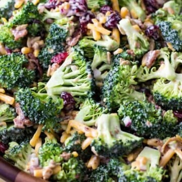

Broccoli Salad

Prep Time
10 mins
Chilling Time
1 hour
Total Time
10 mins
A simple broccoli salad made with bacon, cranberries, and other simple add-ins!
- Course: Salad, Side Dish
- Cuisine: American
- Keyword: broccoli salad
- Serving: 8 cups
- Calories: 291 kcal
- Author: Sam Merritt
Ingredients
Salad
- 5-6 cups broccoli florets
- 1 cup sharp cheddar cheese
- 2/3 cup dried cranberries
- 1/2 cup crumbled bacon
- 1/2 cup salted sunflower seeds
- 1/3 cup red onion
Dressing
- 3/4 cup mayo
- 1/4 cup sour cream
- 1 1/2 tbspn white wine vinegar
- 3 tbspn sugar
- 1/4 tspn salt
- 1/4 tspn pepper
Instructions
- Combine broccoli florets, cheddar cheese, dried cranberries, bacon, sunflower seeds, and onion in a large bowl.
- In a separate, small bowl, whisk together mayo, sour cream, vinegar, sugar, salt, and pepper until smooth and well-combined.
- Pour dressing over broccoli combination and toss or stir well.
- Broccoli salad may be served immediated, but for best flavor refrigerate for at least one hour before serving. Make sure to toss broccoli salad thouroughly again before serving.
Keep refrigerated if not consuming right away.